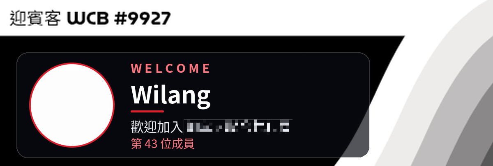

功能
- 歡迎訊息
- 成員加入時發到你指定的頻道。可選純文字或嵌入式訊息，內容可用 {user}、{server}、{member_count} 等變數。
- 歡迎圖片
- 自動畫出附有成員頭像、名稱與第幾位成員的圖片。花體字、符號、Emoji 的名稱也能正常顯示。
- 離開通知
- 成員離開時發訊息到指定頻道，內容自訂。
- 自動身分組
- 新成員加入時自動給指定身分組。權限不足時不會當機，而是在頻道提醒管理員。
- 管理名單
- 指定哪些成員或身分組可以使用設定指令，避免被其他人誤改。
常用指令
| 指令 | 用途 |
|---|---|
/歡迎 快速設定 | 一次設好歡迎頻道、訊息、樣式與圖片 |
/歡迎 預覽 | 在目前頻道預覽歡迎訊息，只有你看得到 |
/離開 快速設定 | 設定離開訊息與頻道 |
/自動身分組 設定 | 選擇新成員自動取得的身分組 |
/管理員 新增身分組 | 讓某個身分組也能使用設定指令 |
/設定 | 查看全部設定，並列出缺少的權限 |
邀請時需要的權限
- 檢視頻道、發送訊息
在你指定的頻道發送歡迎與離開訊息。 - 嵌入連結
發送嵌入式訊息。沒有這個權限時會改用純文字。 - 附加檔案
附上歡迎圖片。沒有這個權限時會略過圖片。 - 管理身分組
自動發放身分組。不使用這個功能可以不給。